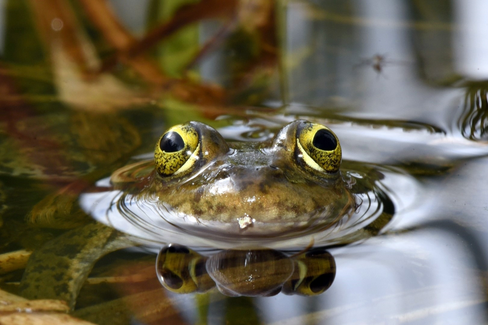
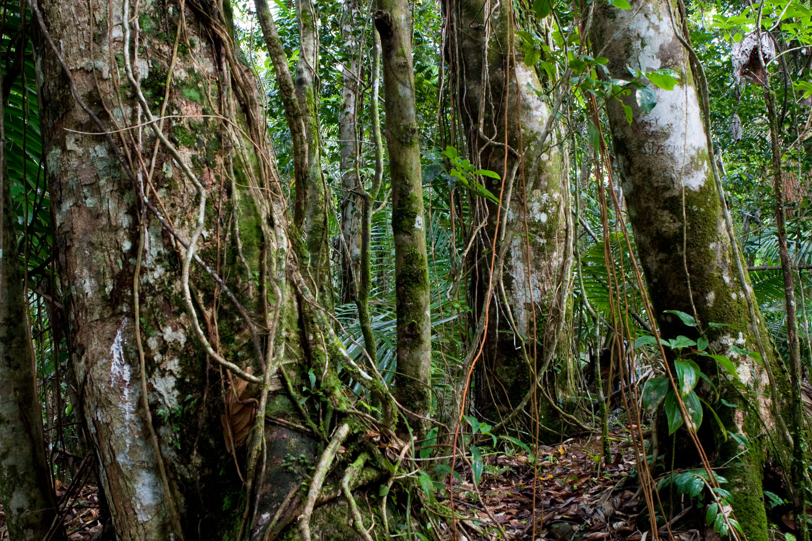

Using R-Shiny to re-create the Mint (by Intuit) interactive dashboard

Creating custom data visualizations in R using mark-recapture data from USGS
Calculating NDVI using Landsat remote sensing data around the Santa Clara River area
An analysis of the Thomas Fire, including a raster image of the fire’s perimeter and plots depicting the air quality (AQI) in affected counties.

Comparison of linear models, summarizing tropical tree growth during a severe drought